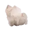
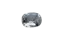
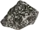
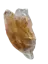

Correspondence Grimoire
Meditation

Candle QuartzCat's Eye
Colorless Spinel
Gabbro
Golden SeleniteGreen CalciteGreen JasperGreen TourmalineDefinition
Meditation is the correspondence of stillness, focused awareness, and the deliberate quieting of the mind. In magickal practice, meditation serves as both a standalone discipline and a foundational skill that strengthens every other form of spellwork.
Why Meditation Matters in Magick
The core act of magick is the movement of energy: raising it, focusing it, directing it, and sending it outward. Meditation trains the mind to do exactly this. A practitioner who can hold a single intention in their awareness without distraction will cast more effective spells than one whose thoughts scatter in every direction.
Meditation also develops the awareness needed to sense the energetic field around you. This is a deliberate activity that involves opening the intuitive and cognizant senses, the conscious and subconscious mind, to receive information from your surroundings. It is not passive observation but an active reaching out.
Altered States of Awareness
No drugs or alcohol are needed to achieve an altered state of awareness. Meditation, breathing, chanting, and dancing are all effective methods for shifting consciousness. These altered states allow the practitioner to access deeper layers of the cosmic web, communicate with spirits and guides, and direct energy with greater precision.
Working with Meditation Energy
Common Meditation Intentions
- Deepening concentration for spellwork
- Developing psychic sensitivity and intuitive awareness
- Connecting with guides, ancestors, or spirit allies
- Processing emotions and releasing energetic blockages
- Grounding and centering before or after ritual
- Accessing the cosmic information repository for insight
The Cosmic Information Repository
Like the internet, the cosmic web teems with information. All ideas, words, actions, and emotions going back to the beginning of time are stored in this energetic matrix. Anyone who knows how to access it can tap this vast storehouse of knowledge. Meditation is one of the primary methods for making this connection. Inventors, artists, musicians, and other creative people often claim to receive insights without knowing where they came from. They are connecting to the cosmic web and drawing knowledge from it.
Building a Practice
Begin with simple awareness exercises. Sit in a comfortable position, close your eyes, and focus on your breathing. When your mind wanders, gently return your attention to the breath. Even a few minutes of daily practice will strengthen your ability to focus, which directly improves your magickal work.
As your practice deepens, you can incorporate visualization, energy sensing, and guided journeying. The key is consistency. A short daily practice is more effective than occasional long sessions.